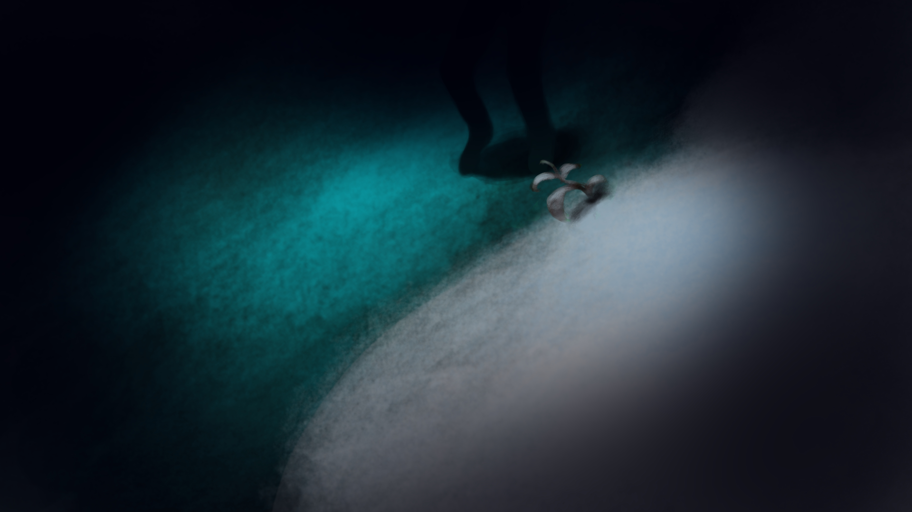
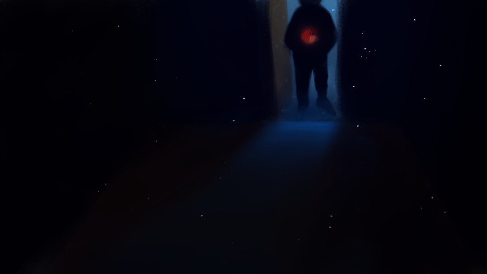
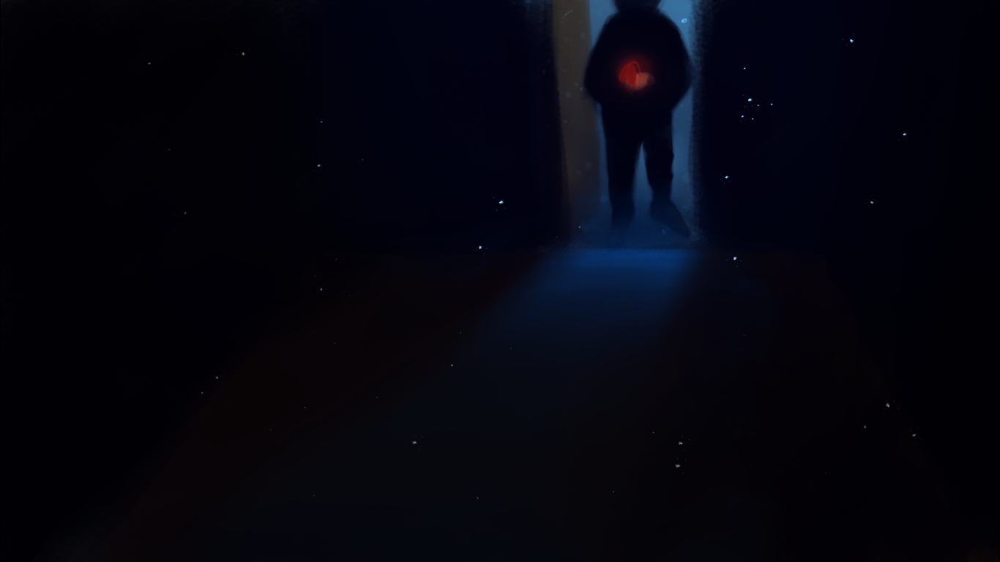

Game Dev
Using the Godot Engine to make open-source adventure games with an emphasis on worldbuilding and exploration. Check them out.
A World of Order
A short top-down adventure game taking inspirations from many real-life cults and imagines what life would look like when a cult is at the helm of government.

Seeker
At the edge of the universe, the Seeker completes their mission. No matter the cost.

One Last Wish
One last gift for his beloved daughter before he leaves this world.

...and a few more games.
Art
Still learning how to be a good artist; everything is done in Krita. My philosophy: Colors matter more than linework.
I abuse the textured brushes and the color blue way too much.
 

...and the art in all my games except A World of Order and One Last Wish.
Music
Sometimes I make ambient, very repetitive music with LMMS on SoundCloud.
We
Snow World (Yume Nikki remix)
The Expanse
Linux Enthusiast
Started with Lubuntu in early December 2019. Now it's impossible for me to live without Linux. Current setup:
Lubuntu 20.04
You don't forget your first :)

Programming
Creating somewhat helpful Electron apps on occasions. I can use Javascript, GDScript, Bash.
Timeblocker
A simple timeblocking app to organize tasks in a time-based manner.

Ren'Dot
A Ren'Py-like parser to allow rapid scriptwriting for my games.

Setup Script
Bash script to help set things up (installing preferred packages, updating GRUB, etc.) on a new Linux system.